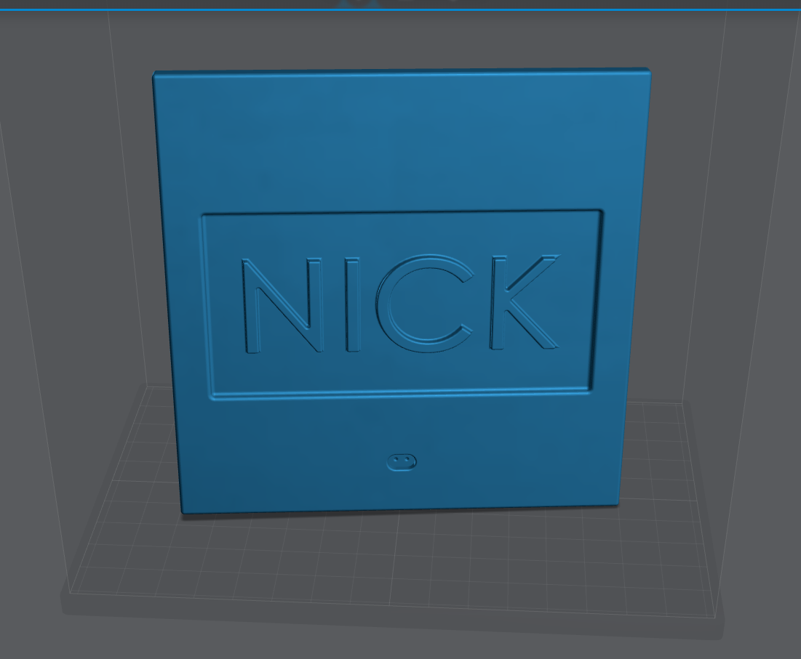
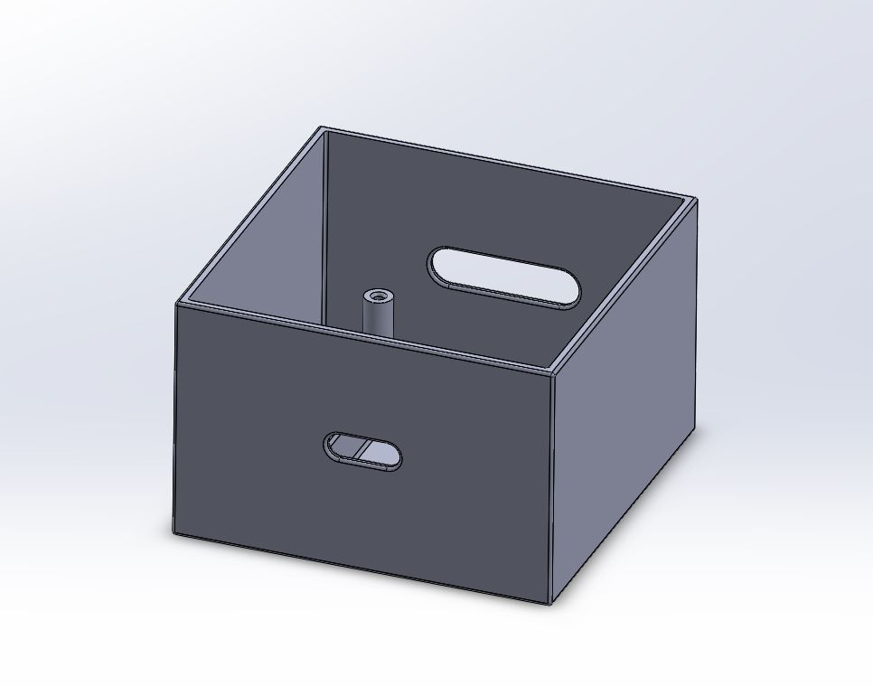
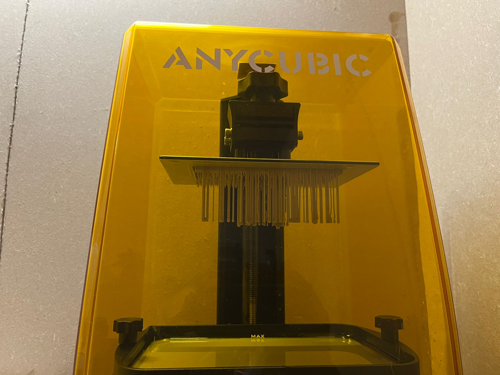
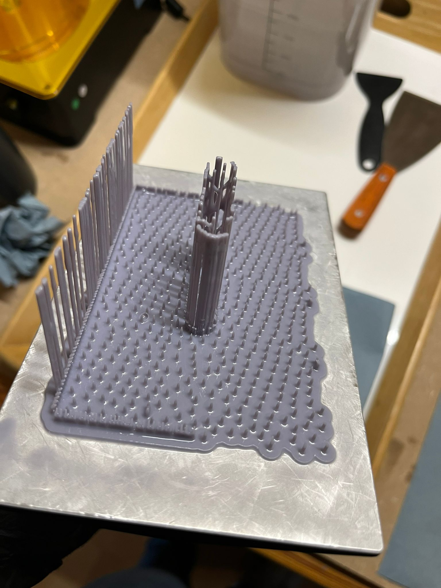

Mijn leerdoelen Tijdens MSI
Tijdens de minor heb ik voor mezelf een aantal prioriteitspunten opgesteld, namelijk:
- Ik wil streven naar tijdige terugkoppeling van resultaten en vaker overleg en bespreking van ideeën.
- Ik wil mijn kennis vergroten en deze inzetten rond de impact van innovaties en de bedrijfskundige aspecten hiervan.
- Ik wil mijn kennis zo duidelijk en boeiend mogelijk overbrengen op collega's die minder of geen kennis hebben van het onderwerp.
Daarnaast wil ik graag meer kennis opdoen over de bedrijfskundige aspecten van innovaties, zoals de gevolgen ervan en het vroegtijdig hierover nadenken. Dit omvat de impact op de organisatie en de medewerkers. Dit is ook een van de redenen waarom ik voor deze minor heb gekozen, omdat ik innovaties meestal vanuit een technisch perspectief bekijk.
Tijdens mijn stage kreeg ik te horen dat ik informatie op een begrijpelijke manier kan overbrengen aan leken. Ik wil deze vaardigheid gebruiken om mijn kennis over te dragen aan mijn collega's tijdens dit project, zodat zij ook van mij kunnen leren en meer bereid zullen zijn om hun kennis met mij te delen. Dit zal ons als team in staat stellen om van elkaar te leren en ons allemaal gemakkelijker te verbeteren.
Ik hecht veel belang aan deze drie punten, omdat ze me zullen helpen een betere professional te worden. Daarom heb ik hier meer aandacht aan besteed en mijn focus op gelegd.
Competentie tabel Nick

Aanpak project omtrent leerdoel
Ik ben het project met een open mindset begonnen. In eerste instantie hebben we de opdracht
geanalyseerd en initiële informatie verzameld. Tijdens deze fase lag mijn focus voornamelijk op het
delen van informatie met mijn teamleden. We bespraken regelmatig de informatie die we hadden
verzameld.
Ik heb mijn teamleden zoveel mogelijk geholpen en geadviseerd bij hun portfolio, omdat zij beiden
geen ervaring of kennis hadden van HTML, terwijl ik dat wel had. In ruil daarvoor heeft Job mij
geholpen met het maken van mijn 3D-model van het bakje, en heeft Teun ons geholpen en geadviseerd
bij het maken van een business model canvas en de wijzigingen die we daarin tijdens het project
hebben aangebracht. Op die manier hebben we alle drie onze eigen kennis kunnen inzetten tijdens het
project en waren we actief betrokken bij elkaars werk. We hebben ontzettend veel van elkaar geleerd.
Zo hebben we allemaal ons eigen steentje bij kunnen dragen, onze eigen kennis in kunnen zetten en
elkaar nieuwe dingen kunnen leren.
Hieronder is de deksel en het bakje te zien die ik met behulp van Job heb ontworpen voor mijn bakje.


Leermoment 1: Nadenken gevolgen inovatie
Reflectie
Ik kijk terug op een zeer productieve en leerzame periode, vooral tijdens het project. Hier kon ik
mijn kennis inzetten om gerichter te werken en advies te geven. Bijvoorbeeld, door mijn kennis van
sensoren en het verwerken van gegevens. Ik realiseerde al snel dat de robotarm van ons project
alleen het hoogste punt herkende en vervolgens hier het object probeerde op te pakken, wat niet
altijd de gewenste aanpak was. Met behulp van deze kennis hebben we advies opgesteld om dit te
verbeteren. Mijn medegroepsleden hebben ook hun kennis kunnen benutten binnen het project, waardoor
we elkaar mooi hebben aangevuld en veel van elkaar hebben kunnen leren
In het begin van de minor had ik mijn twijfels over multidisciplinair werken, vooral omdat er vaak
grote persoonlijke verschillen zijn tussen studenten van verschillende opleidingen. Maar in de
toekomst wil ik proberen dit vaker toe te passen. Ik ben ervan overtuigd dat dit een uitstekende
manier van werken is, omdat het het beste in alle deelnemers naar boven haalt. Zelfs als
multidisciplinair werken niet altijd mogelijk is, wil ik proberen om vaker aspecten vanuit andere
rollen en opleidingen te bekijken. Ik heb gemerkt dat ik dit erg prettig vind werken en naar mijn
mening ook betere resultaten oplevert.
Natuurlijk verliep niet alles vlekkeloos tijdens de minor. Tijdens het project hadden we
bijvoorbeeld moeite om de juiste personen te bereiken met de benodigde informatie. Maar ook deze
uitdaging hebben we overwonnen, ik heb geleerd om duidelijk mijn grenzen te stellen en mijn vragen
en behoeften zo concreet mogelijk te formuleren. Indien nodig heb ik ook de uitdagingen benoemd,
zodat de andere partij op de hoogte was van de reden achter mijn vraag.
Tijdens het printen van het zelf ontworpen bakje voor de IoT-schakeling ondervond ik persoonlijk wat
problemen. Ik probeerde het bakje zelf uit te printen met mijn eigen printer. Dit was de eerste keer
dat ik een zelf ontworpen object probeerde te printen. Zoals te zien is op de foto, mislukte de
eerste poging.


Na deze mislukte poging heb ik het bakje en de ondersteuningen aangepast. Op dit moment van
schrijven wordt het bakje opnieuw uitgeprint en het ziet er veelbelovend uit. Ik ben van plan om me
in de toekomst verder te verdiepen in 3D-modelleren, omdat ik het erg leuk vind om te doen!
Eindoordeel
Ik kijk met plezier terug op een leuke en leerzame periode tijdens de minor. Ik heb mijn kennis op
het gebied van ICT en IoT kunnen inzetten en hopelijk mijn studiegenoten iets kunnen bijbrengen.
Tegelijkertijd heb ik zelf ook veel geleerd van mijn medestudenten en docenten, zoals het
3D-modelleren en het analyseren en opstellen van business cases. Het maken van een business model
canvas en het nadenken over verschillende aspecten hiervan waren ook waardevolle leermomenten.
In mijn opinie zijn mijn belangrijkste leerpunten:
- Maak gebruik van de kennis en kwaliteiten van je omgeving (studiegenoten, docenten, begeleiders, enz.). Ik heb gemerkt dat je samen, vooral in een multidisciplinaire setting, veel verder kunt komen dan wanneer je alleen werkt.
- Bekijk innovaties vanuit alle perspectieven om zoveel mogelijk draagvlak te creëren en interesse vanuit verschillende invalshoeken te ontwikkelen. Betrek de mensen die uiteindelijk gebruik zullen maken van de innovatie en laat hen meedenken. Dit zal resulteren in een betere innovatie.
Graag wil ik ook nog de leuke workshops en aspecten benadrukken, met name de bedrijfsbezoeken aan Seco en ELK. De kookworkshop, 3D-modelleringsworkshops en de inspirerende gastspreeksters waren ook erg waardevol. Ik heb al deze onderdelen met veel plezier bijgewoond.
Tot slot kijk ik terug op een succesvolle minor en een juiste keuze. De minor heeft geleverd wat ik ervan hoopte, en het heeft me geholpen om gemakkelijker bruggen te slaan tussen bedrijfskundige en technische aspecten.
Ik ben ervan overtuigd dat ik hier in de toekomst veel profijt van zal hebben!